Инструкция · ИИ-помощники
Джарвис - это кто? Два ИИ-помощника, которых можно установить
Средний уровень
Джарвис (JARVIS) из фильма «Железный человек» разговаривает с Тони Старком, управляет его домом и помогает пилотировать броню. Имя JARVIS складывается из первых букв английской фразы Just A Rather Very Intelligent System («Просто весьма интеллектуальная система»). Сегодня Джарвисом называют личного ИИ-помощника, который знает твои привычки, понимает задачи и выполняет поручения.
Ты выбираешь, к каким файлам, приложениям и устройствам у него будет доступ, и какие задачи он будет для тебя выполнять. Разберём два проекта с таким названием: OpenJarvis и голосовой Jarvis для Claude Code.
Какого Джарвиса выбрать?
OpenJarvis от исследователей из Стэнфорда подойдёт, если хочешь запустить модель на своём компьютере и подключать документы, мессенджер или умный дом.
Jarvis для Claude Code подойдёт, если хочешь общаться с Claude Code голосом. Первый запуск в этой инструкции на английском.
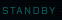
Содержание статьи
1. OpenJarvis
OpenJarvis от исследователей из Стэнфорда позволяет собрать личного ИИ-помощника на своём компьютере. Ты выбираешь модель, которая будет отвечать на вопросы, и подключаешь сервисы для конкретных дел. Сама программа бесплатна, а модель можно запускать прямо на компьютере.
Ему можно поручить собирать новости по твоей теме и каждое утро присылать подборку в Telegram. С Google Drive или Notion помощник сможет искать ответы в твоих материалах, а через Home Assistant управлять светом в гостиной.
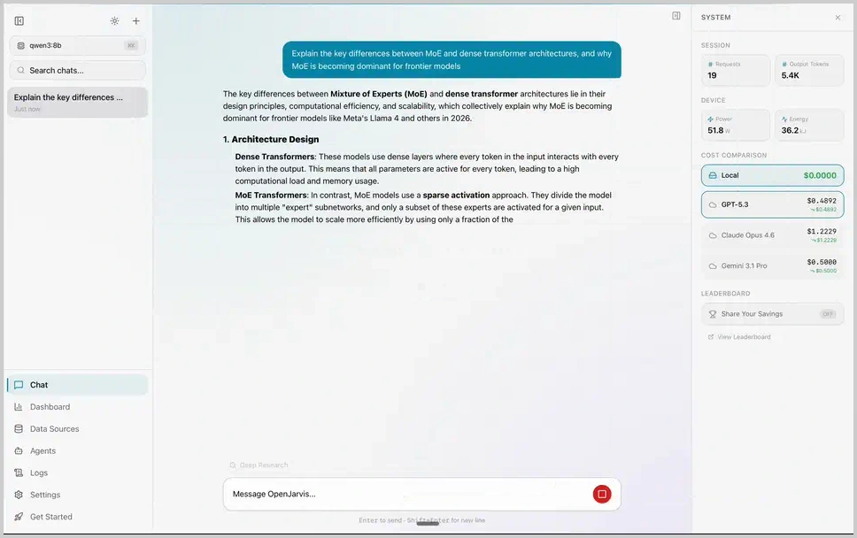
Как установить OpenJarvis: с агентом или вручную
Выбирай, как тебе удобнее. Если у тебя уже есть Claude Code, Codex или другой агент с доступом к терминалу, он может взять установку на себя. Если такого помощника пока нет или хочется разобраться самостоятельно, переходи к ручной установке на Mac или Windows.
Для установки с агентом открой его на своём компьютере и отправь это поручение:
Помоги установить OpenJarvis на моём компьютере и открыть первый чат. Сначала посмотри, что уже установлено. Всё, что можешь сделать через терминал, сделай сам. Когда понадобится моё действие, дай один шаг: куда зайти, что нажать и что сообщить тебе в ответ. Дождись моего ответа и только потом продолжай. В конце покажи, как мне открыть чат в следующий раз.
1. Ввести команду в терминале
На Mac нажми Command + пробел, найди «Терминал» и открой его. Если macOS предложит установить инструменты командной строки, подтверди установку и дождись окончания. Инструкция для Mac.
На Windows открой Ubuntu из меню «Пуск», если уже пользуешься WSL2. Если Ubuntu ещё нет, найди PowerShell, выбери «Запуск от имени администратора» и выполни команду ниже. Если Windows попросит перезагрузиться, сделай это. Затем открой Ubuntu и заверши первоначальную настройку. Инструкция для Windows.
wsl --install
Команда установки OpenJarvis
Вставь команду в Терминал на Mac или в Ubuntu на Windows. Нажми Enter и дождись окончания установки. Установщик скачает OpenJarvis, Ollama для запуска модели и небольшую стартовую модель. Если появится выбор облачного провайдера и ты хочешь запустить модель на компьютере, выбери локальный вариант. Официальный установщик.
curl -fsSL https://open-jarvis.github.io/OpenJarvis/install.sh | bash
2. Запусти первый чат
В том же окне введи команду ниже. Если система пишет, что команда не найдена, закрой окно, открой заново и повтори. Когда появится строка ввода, задай простой вопрос. Например, «Объясни разницу между архивом и папкой в двух предложениях». Ответ появится в том же окне.
jarvis
Как собрать свою утреннюю газету
С OpenJarvis можно сделать себе утреннюю газету. Допустим, ты следишь за нейросетями для монтажа. Каждое утро Джарвис просматривает выбранные тобой источники и присылает в Telegram одно сообщение: что появилось, чем это пригодится в работе и где посмотреть оригинал. За завтраком ты читаешь подборку и открываешь только то, что заинтересовало.
Собрать газету тоже можно двумя способами. Если у тебя есть агент, отправь ему поручение ниже. Если удобнее сделать самостоятельно, открой ручную настройку газеты.
Поручить настройку агенту
Открой своего агента на компьютере, где будет работать OpenJarvis. Скопируй текст ниже, впиши тему и ссылки на источники. Время и часовой пояс можно заменить.
Настрой мне утреннюю газету через OpenJarvis. Каждый день в 09:00 по Москве присылай в мой личный чат Telegram до трёх новостей за последние сутки. К каждой дай короткое объяснение и ссылку на оригинал. Если свежих новостей нет, так и напиши. Моя тема: [о чём я хочу читать]. Мои источники: [вставь ссылки на сайты]. Посмотри, как у меня установлен OpenJarvis, и настрой сбор новостей, доставку и расписание для моей системы. Проведи меня по шагам. Когда понадобится моё участие, дай только одно действие: куда зайти, что нажать и что сообщить тебе в ответ. Если бота ещё нет, помоги создать его через @BotFather и дождись, пока я напишу своему боту. Когда понадобится токен Telegram, открой мне локальный файл или скрытый ввод и скажи, куда его вставить. Определи номер моего чата по сообщению, которое я отправлю боту. Пришли один пробный выпуск. В конце покажи, где менять тему, ссылки и время и как отключить рассылку.
Первый выпуск придёт в личный чат твоего бота. Открой одну из ссылок и посмотри, подходит ли подборка. Для следующих выпусков компьютер должен быть включён в назначенное время, с доступом к модели и интернету.
Как настроить газету вручную
Ниже один способ собрать выпуск по своим ссылкам и получать его в личном чате. Команды вводи в Терминале на Mac или в Ubuntu на Windows. Понадобятся установленный OpenJarvis, запущенная модель и интернет.
1. Создай бота и укажи, куда присылать выпуск
В Telegram открой @BotFather, отправь /newbot и выбери имя и адрес бота. Скопируй выданный токен. Затем открой своего нового бота, нажми «Старт» и отправь ему слово «Газета».
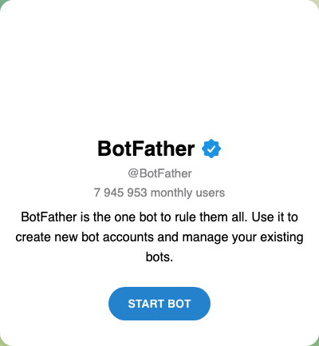
На компьютере открой настройки OpenJarvis этой командой:
nano ~/.openjarvis/config.toml
В разделе [channel] установи enabled = true. В разделе [channel.telegram] вставь токен между кавычками. Если такого заголовка ещё нет, добавь его. Каждый заголовок в файле должен встречаться один раз.
[channel.telegram] bot_token = "сюда вставь токен от BotFather"
В редакторе nano нажми Ctrl+O, затем Enter для сохранения и Ctrl+X для выхода. Токен даёт доступ к боту, храни его у себя. Настройки каналов OpenJarvis.
Теперь узнай номер личного чата. Для только что созданного бота вставь команду ниже целиком. Она попросит токен без отображения на экране и выведет номера личных чатов, из которых боту написали «Газета». Скопируй свой номер.
python3 - <<'PYTHON'
import getpass, json, urllib.request
token = getpass.getpass("Токен BotFather: ").strip()
url = "https://api.telegram.org/bot" + token + "/getUpdates"
with urllib.request.urlopen(url) as response:
updates = json.load(response)["result"]
for update in updates:
msg = update.get("message", {})
chat = msg.get("chat", {})
if chat.get("type") == "private" and msg.get("text", "").strip() == "Газета":
print(chat.get("first_name", ""), chat["id"])
PYTHONЕсли номера нет, отправь слово «Газета» именно в личный чат своего бота и повтори команду. Как Telegram передаёт сообщения боту.
2. Вставь свои ссылки и напиши поручение
Введи команду ниже. Она откроет текстовый файл для твоего задания.
nano ~/.openjarvis/gazeta.txt
Вставь текст ниже. Вместо двух адресов в конце можно поставить ссылки на разделы новостей, которые ты читаешь. Тему, язык и количество новостей тоже можно поменять. Сохрани файл через Ctrl+O, Enter, Ctrl+X.
Собери до трёх новостей о программах для видеомонтажа за последние сутки. Используй только указанные ниже источники. Для каждой новости напиши по-русски, что изменилось и кому это пригодится. Дай прямую ссылку на публикацию. Если свежих новостей нет, так и скажи. Весь выпуск должен поместиться в 2500 знаков. https://blog.adobe.com/ https://www.blackmagicdesign.com/media/
3. Свяжи сбор новостей с отправкой в Telegram
Выполни command -v jarvis и скопируй полный путь, который появится. Затем открой новый файл:
nano ~/.openjarvis/gazeta.sh
Вставь четыре строки. В первой паре кавычек укажи скопированный путь, во второй паре свой номер чата. Сохрани файл. При запуске первая команда OpenJarvis прочитает твоё поручение и соберёт новости, вторая отправит готовый текст в Telegram.
JARVIS="полный путь из command -v jarvis"
CHAT="номер личного чата"
digest=$("$JARVIS" ask --agent orchestrator --tools web_search,http_request "$(cat "$HOME/.openjarvis/gazeta.txt")") || exit 1
[ -n "$digest" ] && "$JARVIS" channel send --channel-type telegram "$CHAT" "$digest"Чтобы сразу получить первый выпуск, введи следующую команду:
bash ~/.openjarvis/gazeta.sh
Открой личный чат именно своего бота: там должен появиться выпуск. Если сообщения нет, посмотри, какую ошибку вывел терминал, сверь номер чата и токен бота. Если подборка не собралась, открой чат OpenJarvis и проверь, отвечает ли модель.
4. Выбери время доставки
На Mac введи EDITOR=nano crontab -e. Добавь строку ниже в конец и сохрани. Она запускает твою газету каждый день в 09:00 по местному времени. Для 08:30 замени первые два числа на 30 8.
0 9 * * * /bin/bash "$HOME/.openjarvis/gazeta.sh"
На Windows с Ubuntu открой «Планировщик заданий» в меню «Пуск». Выбери «Создать простую задачу», назови её «Утренняя газета», выбери «Ежедневно» и укажи время. В действии «Запустить программу» введи wsl.exe. В поле «Добавить аргументы» вставь строку ниже и нажми «Готово».
-d Ubuntu -- bash -lc "bash ~/.openjarvis/gazeta.sh"
К назначенному времени компьютер должен работать, а модель и интернет быть доступны. Чтобы сменить источники или поручение, отредактируй gazeta.txt. Расписание при этом сохранится. На Mac для смены времени снова открой crontab. Для отмены удали только строку со своим gazeta.sh. На Windows открой библиотеку Планировщика заданий и выбери «Утренняя газета». В «Свойства → Триггеры → Изменить» можно перенести выпуск, а действие «Отключить» остановит рассылку. После перезагрузки убедись, что модель отвечает в чате OpenJarvis. Пример новостной подборки у разработчиков.
Как искать по документам и управлять светом
Для следующих шагов понадобится оконная версия. Открой последний выпуск OpenJarvis Desktop и раскрой список Assets. На Mac выбери установщик .dmg для своего процессора, на Windows файл setup.exe для архитектуры компьютера. После установки открой OpenJarvis из списка приложений. Есть также порядок запуска в браузере.
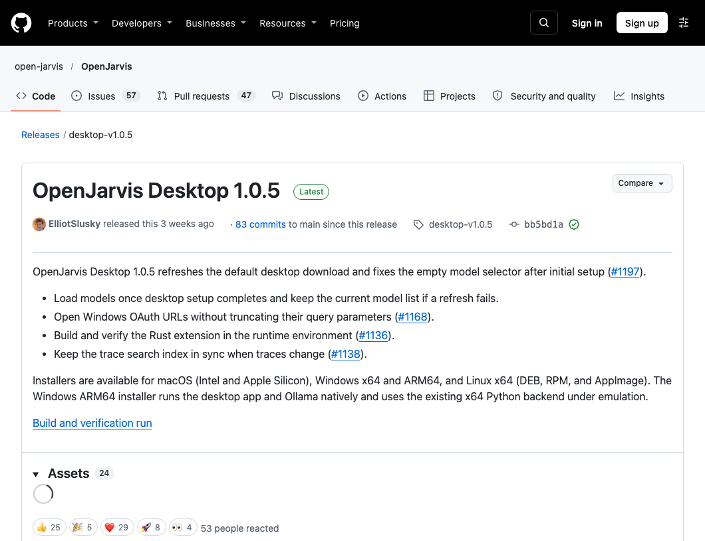
Google Drive. В Google Cloud включи Google Drive API и создай данные для входа через Google по инструкции ниже. В оконной версии OpenJarvis открой Agents → Channels → Google Drive, вставь Client ID (идентификатор приложения) и Client Secret (его секретный ключ) и подтверди доступ на чтение в окне Google. После синхронизации вернись в чат и спроси о конкретном документе, например «Какой микрофон указан в списке оборудования?». Пошаговая настройка Google Drive.
Notion. Создай внутреннюю интеграцию в Notion. На нужной странице открой меню «…» → Connections и выбери эту интеграцию. В OpenJarvis открой Agents → Channels → Notion и вставь токен интеграции. Как создать интеграцию и открыть нужные страницы.
Свет в гостиной. Сначала добавь светильник в Home Assistant и убедись, что он включается из этого приложения. Затем подключи к OpenJarvis сервер Home Assistant по инструкции разработчиков: там показано, в какой раздел настроек вставить адрес сервера и токен. После подключения можно попросить выключить светильник по его имени. Настройки подключения Home Assistant.
Проект на GitHub · Google Drive и Notion · Телеграм · Задачи по расписанию · Умный дом.
2. Голосовой Jarvis
Голосовой Jarvis позволяет разговаривать с Claude Code, ИИ-помощником, который работает с файлами проекта. Ты открываешь Jarvis в браузере, задаёшь вопрос в микрофон и слышишь ответ. Это удобно, когда обе руки заняты или проще спросить вслух, чем открывать файлы по очереди.
Например, в папке проекта лежит план встречи. Ты спрашиваешь, во сколько она начнётся, Claude находит время в файле, а Jarvis произносит его вслух. В этой версии вопросы и ответы звучат по-английски. Для работы нужен доступ к Claude.
Что подготовить
Файлы голосового Jarvis можно скачать бесплатно. Ответы Claude расходуют лимиты подписки или оплачиваются отдельно при использовании API.
Открой редактор VS Code. Если его ещё нет, подготовь рабочее окно по инструкции по VS Code, Claude Code и Codex. Для самого разговора понадобится установленный Claude Code с выполненным входом в аккаунт, даже если установку Jarvis поручишь Codex. Установка и вход показаны в официальном начальном руководстве Claude Code.
Установку и заметку поручим панели Claude Code или Codex в VS Code. В шаге 2 показано, где вставлять запрос. Помощник проверит Node.js, программу для запуска Jarvis, и при необходимости установит подходящую официальную версию.
Подготовь Chrome и микрофон. Открывай адрес в отдельном окне Chrome, а не во вкладке просмотра внутри VS Code. Тариф и доступность Claude зависят от аккаунта и поддерживаемой страны.
Редактор и доступ к Claude готовятся один раз. Дальше установку и работу с пробной заметкой поручим помощнику.
Установка и первый разговор
1. Скачай готовый проект и открой его папку
Скачай ZIP-архив проверенной версии Jarvis. Ссылка ведёт на GitHub, где хранятся файлы проекта, и закреплена за версией 9ae5ec8. Название скачанного архива начинается с jarvis-, дальше идёт длинный номер версии. Исходники этой версии.
После распаковки нужную папку узнаешь по двум файлам: README с инструкцией проекта и package.json со списком компонентов и команд запуска.
ZIP означает архив, один файл с папкой проекта внутри. Найди его в «Загрузках» и распакуй:
На Mac.
- Дважды нажми скачанный ZIP-архив.
- Дождись появления распакованной папки рядом с архивом.
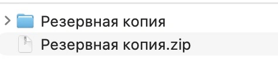
На Windows.
- Нажми скачанный ZIP-архив правой кнопкой и выбери «Извлечь всё».
- Подтверди распаковку. Открой полученную папку. Если внутри ещё одна папка с именем jarvis-, открой её: рядом должны лежать README и package.json.
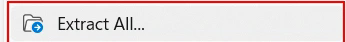
Перемести папку проекта туда, где хранишь проекты. В окне открытия выбирай распакованную папку, а не ZIP.
В стартовом окне VS Code нажми Open Folder («Открыть папку») и выбери распакованную папку Jarvis с README и package.json. Если стартовый экран закрыт, в верхнем меню File («Файл») выбери Open Folder («Открыть папку»).

Результат: слева в редакторе появились файлы Jarvis. Помощнику можно дать задачу именно в этой папке.
2. Поручи помощнику установку, затем запусти Jarvis
Сначала проверь доступ к Claude Code. В списке файлов слева нажми папку проекта правой кнопкой и выбери Open in Integrated Terminal («Открыть во встроенном терминале»). Внизу появится панель команд.
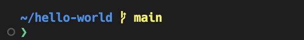
В нижней панели нажми на последнюю строку с мигающим курсором. Вставь команду ниже и нажми Enter. Откроется чат Claude Code. В строке самого Claude Code задай вопрос «Сколько будет два плюс два?» и дождись ответа 4. Если нужен вход, пройди его по начальному руководству выше. Если лимит закончился, проверь в Claude Code время его восстановления.
claude
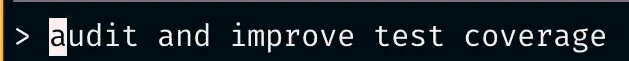
Проверка в нижней панели завершена. Для задач установки и заметки используй отдельную панель расширения: нажми оранжевую иконку Claude или значок OpenAI для Codex. Если обе панели уже открыты, выбери вкладку Claude Code или Codex, как на кадре. Папка Jarvis остаётся открытой. В поле выбранного чата вставь запрос целиком и отправь стрелкой.
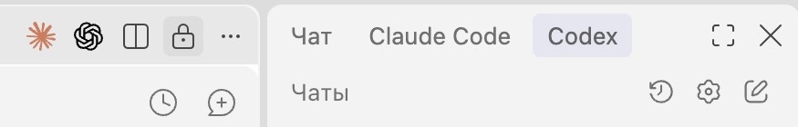
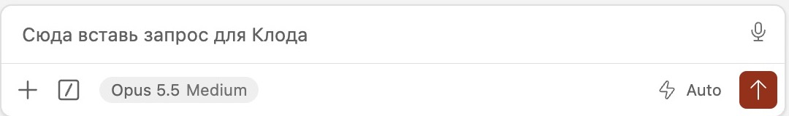
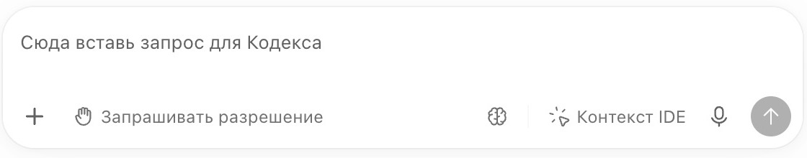
Установи adewaskar/jarvis из уже открытой папки этого проекта. Сначала прочитай README, файл с инструкцией проекта, и требования пакетов, дополнительных компонентов Jarvis. Проверь Node.js: для этого маршрута нужна актуальная версия с длительной поддержкой (LTS), не старее 22.12. Если подходящей версии нет, установи её только из официального источника nodejs.org обычным способом для моей системы. Если требуется моё подтверждение, объясни конкретное действие. Установи пакеты проекта. Сам не запускай постоянный сервер: npm start я введу в отдельном видимом терминале. Не меняй исходный код Jarvis, другие проекты, мои файлы настроек, ключи и данные аккаунтов. Не включай режим записи Jarvis и дополнительные подключения. Не показывай секреты. Отдельно проверь только наличие ключа ElevenLabs в окружении и домашней конфигурации Claude Code, не выводя его значение. Сообщи, включит ли уже имеющийся ключ ElevenLabs автоматически; не добавляй ключ и не подключай сервис вручную. Для первой пробы явно проверь условия запуска: JARVIS_ALLOW_WRITES=0, JARVIS_ACCOUNT_CONNECTORS=0, JARVIS_MCP_SERVERS задан пустой строкой (а не отсутствует), JARVIS_FILE_ROOTS пуст, JARVIS_DISABLE включает browser,camera. Обычный npm start наследует окружение: не считай эти возможности выключенными без проверки. Если для отдельного терминала нельзя подтвердить эти значения, дай одну точную одноразовую команду запуска для моей системы, которая явно задаёт их только этому процессу. Не меняй глобальные настройки, аккаунты или исходники. Сам процесс не запускай. Если подготовить такой запуск не удалось, сообщи об этом и остановись. В конце сообщи фактическую версию Node.js, полный путь к проекту и завершилась ли установка пакетов без ошибки. Если нет, покажи причину, а не сообщение об успехе.
Если помощник остановился с ошибкой, не переходи к голосовой пробе. Отправь ему точное сообщение и попроси объяснить следующий шаг. При сбое самого Claude Code можно воспользоваться запросом помощи в браузерном ChatGPT.
Для первой пробы отдельный сервис голоса не нужен. Без ключа ElevenLabs Jarvis использует распознавание браузера и системный голос. Если такой ключ уже есть в окружении компьютера или домашней конфигурации Claude Code, сервис может включиться автоматически, а речь - передаваться ему ещё до обращения Hey Jarvis. До разрешения микрофона попроси помощника проверить ключ и выбранный режим, не показывая сам ключ. Не добавляй его ради этой пробы. Проверка MCP-серверов и значение VITE_USE_ELEVENLABS=false сами по себе такое подключение не исключают.
Когда установка закончилась без ошибки, снова открой Open in Integrated Terminal через контекстное меню папки. Это отдельная новая панель: не вводи команду в чат Claude Code из первой проверки. Обычную строку ниже используй только если помощник подтвердил условия из запроса установки для этого запуска. Если он дал одноразовую команду, в которой отключены дополнительные подключения и изменение файлов, вставь её вместо npm start. Если условий нет, остановись и передай ответ через запрос помощи. Нажми Enter после выбранной команды.
npm start
В этой новой панели появится строка Local: («Локальный адрес»), обычно http://localhost:5173/. Открой показанный адрес в Chrome. Localhost означает твой компьютер, а не опубликованный сайт. Оставь эту панель работающей. Именно здесь потом остановишь сервер сочетанием Ctrl+C.
Результат: по адресу из терминала открылся экран Jarvis с кнопкой INITIALISE («Запустить»). Ответ модели проверим следующим шагом.
3. Разреши микрофон и задай вопрос
На странице нажми INITIALISE («Запустить»). Во всплывающем запросе Chrome нажми «Разрешить в этот раз», как на кадре ниже. Запрос может появиться ещё при загрузке: тогда разреши доступ сразу.
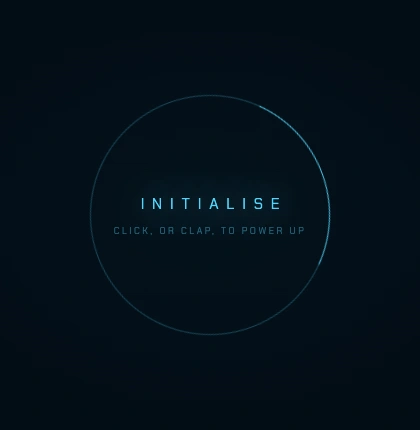
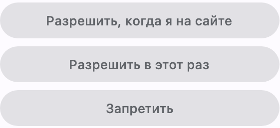
Дождись окончания загрузочной анимации и надписи STANDBY («Ожидание»). Только после неё произнеси Hey Jarvis («Хей, Джарвис») и затем What is two plus two? («Сколько будет два плюс два?»). Так выглядит надпись STANDBY.
Пример ответа: Two plus two is four.
Это означает «Два плюс два - четыре».
Для успешной пробы Jarvis должен услышать вопрос, Claude должен ответить по существу, ответ должен прозвучать через выбранные динамики или наушники. Сообщение о входе или лимите ответом не считается. Если экран не доходит до STANDBY, используй раздел диагностики.
После ответа Jarvis ещё некоторое время слушает: тогда можно произнести следующую реплику. Если он снова ждёт обращения, повтори Hey Jarvis. Пробел позволяет начать реплику без обращения.
Результат: если вопрос распознан и правильный ответ прозвучал, голосовая проба прошла успешно. Теперь проверим полезную задачу.
Что умеет этот Джарвис
Произносишь обращение и задачу. Jarvis передаёт распознанную речь в Claude Code и читает подготовленный ответ вслух. Вопросы не нужно каждый раз отправлять кнопкой. Можно перебить ответ следующей репликой.
Jarvis состоит из двух работающих частей: страницы в браузере и локального моста, который передаёт задачи Claude Code. Мост запускается на компьютере вместе со страницей. Модель отвечает через серверы Anthropic, поэтому эта сборка требует интернета.
Сначала помощнику можно поручить чтение одного документа. Для других задач понадобятся внешние инструменты. Условия их передачи в Jarvis разобраны в разделе подключений.
Первая полезная задача: найти время встречи
Подготовим обезличенную заметку о встрече. Снова открой тот же чат помощника в папке Jarvis и отправь запрос ниже. Он создаст один тестовый файл, вместо того чтобы искать скрытые папки и сохранять заметку вручную.
Подготовь одну пробную заметку для Jarvis. Сначала проверь только наличие demo-plan.txt по нужному пути. Если такой файл уже существует, ОСТАНОВИСЬ и сообщи только его полный путь. Не читай и не перезаписывай существующий файл без моего отдельного разрешения. Рабочая папка самого Jarvis по умолчанию находится в домашней папке пользователя: .jarvis/workspace. Если работающий мост Jarvis запущен с другим значением настройки JARVIS_WORKSPACE, используй именно эту папку. Если действующий путь не удаётся определить, остановись и сообщи это, не выбирай папку наугад. Не просматривай секреты и файлы других проектов. Если запись в рабочую папку запрещена, покажи её точный путь и запроси доступ только к ней. До получения доступа не объявляй файл созданным. Создай в разрешённой рабочей папке только demo-plan.txt с точным содержимым: Team meeting: Tuesday at 15:00. Task: prepare three questions for the call. Не включай режим записи самого Jarvis. В конце покажи полный путь созданного файла и прочитай только его содержимое. Если создать его не получилось, сообщи точную причину и не объявляй успех.
Если файл создан, сверь полный путь и обе строки с запросом. Если помощник сообщил, что файл уже существует, не продолжай эту пробу: выбери для неё другое имя, например demo-plan-2.txt, и замени имя в запросе создания заметки, голосовом вопросе про встречу и запросе изменения времени. Чужую или старую заметку читать и перезаписывать для пробы не нужно. При ошибке сначала реши её с помощником.
Рабочая папка Jarvis обычно находится вне папки скачанного проекта. Если агент сообщает, что запись туда запрещена, попроси показать полный путь и запросить доступ только к этой рабочей папке. Не выдавай доступ ко всему компьютеру. Если доступ получить не удалось, не переходи к голосовой пробе файла: отправь помощнику точный отказ и путь. JARVIS_WORKSPACE задаёт рабочую папку при запуске моста. Если помощник не смог её определить, приложи снимок панели запуска npm start к запросу помощи и напиши «Не знаю рабочую папку Jarvis». До уточнения пути не переходи к пробе файла.
Когда файл подготовлен, произнеси: Hey Jarvis, read demo-plan.txt and tell me the meeting time. Это просьба прочитать заметку и назвать время встречи. Сверь ответ с 15:00; по-английски это может быть three p.m.
Пример ответа: The team meeting is on Tuesday at 3 p.m.
То есть встреча во вторник в 15:00.
Для второй пробы отправь в тот же чат Claude Code или Codex запрос на изменение времени:
В той же разрешённой рабочей папке Jarvis открой только demo-plan.txt, который мы создали для этой пробы. Сначала сравни его содержимое с точными двумя строками:
Team meeting: Tuesday at 15:00.
Task: prepare three questions for the call.
Если содержимое отличается, ОСТАНОВИСЬ, сообщи только полный путь и не меняй файл. Если совпадает, замени только время 15:00 на 16:30. Другой текст и остальные файлы не меняй. Сохрани заметку и покажи её полный путь и новое содержимое. Если изменение не выполнилось, сообщи об этом.Дождись подтверждения нового содержимого с 16:30. Затем повтори тот же голосовой вопрос про встречу. Эта проба проверяет совпадение ответов с заметкой, но сама по себе не показывает, каким инструментом получен ответ. Если файл не найден или время не совпадает, передай помощнику полный путь и точный ответ через запрос помощи.
Пример ответа: The team meeting is on Tuesday at 4:30 p.m.
То есть встреча во вторник в 16:30.
Результат: если в ответах прозвучали 15:00, затем 16:30, обе проверки времени дали ожидаемый результат.
Память, инструменты и ежедневная работа
Что помощник запоминает
Jarvis начинает собственный разговор. Правила из других проектов и прошлые разговоры Claude автоматически сюда не попадают. После закрытия соединения не рассчитывай на восстановление того же разговора.
Постоянные сведения лучше хранить отдельными файлами в разрешённой рабочей папке. Например, профиль проекта и список текущих задач. Чтобы сам голосовой Jarvis сохранял или менял файлы, ему отдельно включают режим записи. В этом упражнении файл меняет помощник в редакторе, поэтому запись для Jarvis выключена.
Что понадобится для дополнительных подключений
MCP связывает помощника с внешним инструментом: поиском, браузером или конкретным сервисом. В настройке запуска JARVIS_MCP_SERVERS перечисляют подключения, которые разрешено использовать Claude Code. Если настройка отсутствует, передаются все уже настроенные MCP-серверы; явно пустое значение не передаёт ни одного. Настройка только внутри постороннего проекта сюда автоматически не переходит.
Почта и календарь из аккаунта Claude включаются отдельной настройкой запуска: JARVIS_ACCOUNT_CONNECTORS=1. Число 1 включает этот способ доступа. Пока эта настройка выключена, эти подключения аккаунта Claude не передаются в Jarvis; MCP-серверы управляются отдельно. Начинай с одного инструмента и одной понятной задачи.
Для управления страницами Chrome установи расширение Claude и подключи его к Claude Code по инструкции проекта. Текущий проект поддерживает Mac и Windows. Для клиентской базы (CRM) и 1С нужен подходящий способ подключения: универсальной готовой связки в этой установке нет.
Точные параметры и способы запуска перечислены в настройках проекта. Меняй их под конкретную задачу вместе с помощником, который работает с этой папкой; не включай все права сразу ради первого разговора.
Что делать при следующем запуске
Открой папку Jarvis в VS Code. В списке файлов слева нажми папку правой кнопкой и выбери Open in Integrated Terminal, как на снимке выше. Повтори ту же команду с подтверждёнными условиями, которая использовалась в первой пробе. Если помощник подготовил одноразовую изолированную команду, нужна именно она. Обычный вариант ниже подходит только при тех же проверенных условиях:
npm start
Открой адрес из строки Local в Chrome, нажми INITIALISE и дождись STANDBY. Скачивание проекта и установка пакетов заново не нужны.
Пока пользуешься помощником, компьютер должен работать, а страница и мост оставаться открытыми. Для остановки нажми Ctrl+C в панели запуска. Один npm start не превращает программу в круглосуточный сервис и не создаёт расписание задач.
Если разговор не начался
Выбери свой симптом: экран не загрузился, запрещён микрофон, нужен вход, закончился лимит, нет голоса, не виден мост или нет графики.
Загрузка не доходит до STANDBY
Открой оставленную нижнюю панель, где работает npm start, и посмотри последнее сообщение. Если запуск остановился, повтори в этой же панели выбранную команду первого запуска с теми же условиями. Затем открой адрес из строки Local и нажми INITIALISE. Если процесс работает, а экран остаётся на загрузке, перезагрузи страницу. Если это не помогло, отправь снимок и текст из этой панели через запрос помощи. Помощник устанавливал проект, а этот процесс запускаешь и останавливаешь ты.
Браузер не разрешает микрофон
Открой справку своего браузера: разрешение микрофона в Chrome или разрешения микрофона в Edge. Если браузер всё равно не слышит, приложи сообщение и название браузера к запросу помощи. Не переустанавливай Jarvis только из-за отказа разрешения.
Jarvis отвечает «Not logged in»
Это означает «вход не выполнен». Вернись к нижней панели с командой claude из шага 2 и выполни вход по начальному руководству. Когда вопрос про два плюс два получит ответ в этом терминальном чате, останови Jarvis через Ctrl+C и повтори выбранную команду запуска. Переустанавливать пакеты ради входа не нужно.
Claude сообщает, что закончился лимит
Jarvis использует тот же доступ к модели и не увеличивает лимиты. Время восстановления проверь в Claude Code. Дождись восстановления доступа или проверь условия своего тарифа.
Нет ответа, Jarvis не слышит или не говорит
Проверь выбранные динамики или наушники и громкость вкладки. На странице Jarvis клавиша T запускает звуковую самопроверку: должен прозвучать тестовый голос. Если его не слышно, проверь устройство вывода звука. Клавиша D открывает панель диагностики. Найди строку last heard («последняя услышанная фраза»). Если после твоей реплики там по-прежнему nothing yet («пока ничего»), проверь разрешение микрофона и повтори английскую фразу. Если фраза появилась, а ответа нет, проверь вход в Claude Code. Если причина остаётся непонятной, приложи снимок панели к запросу помощи; его можно отправить и в браузерный чат.
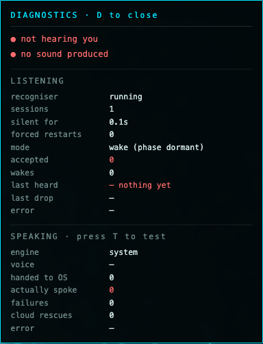
Страница не видит мост
Вернись в панель с npm start и прочитай ошибку. У страницы и моста разные порты, номера подключения: Local показывает адрес страницы, а мост по умолчанию использует 8787. Если не открывается сама страница, используй текущий Local. Если страница открылась, но пишет Bridge not reachable («мост недоступен»), одного нового адреса Local недостаточно. Проверь сообщение запуска моста в той же панели. Ошибка занятого порта означает, что этот номер подключения уже использует другая программа. Если ранее уже запускался Jarvis, останови предыдущий запуск через Ctrl+C в его панели и повтори выбранную команду запуска. Если не знаешь, какая программа занимает порт, не останавливай чужие процессы: скопируй сообщение в запрос помощи.
Трёхмерная графика не появилась
Для трёхмерной графики нужна возможность браузера WebGL. Если появляется сообщение WebGL context, передай его помощнику вместе с названием браузера и системой.
Частые вопросы
Можно ли пользоваться с телефона?
Эта инструкция запускает Jarvis на компьютере. Доступ с телефона потребует отдельной настройки.
Работает ли он, пока компьютер выключен?
Нет. Локальные процессы останавливаются вместе с компьютером. Для постоянной работы нужна отдельная работающая машина и настройка сервиса.
Можно ли заменить Claude на Codex?
Codex может помочь установить файлы проекта, но выбранный Jarvis отправляет задачи именно Claude Code. Чтобы подключить другую модель вместо Claude, придётся менять программу.
Можно ли сразу разговаривать по-русски?
В исходной версии проекта, на которую ведёт ссылка в шаге 1, распознавание и выбор голосов настроены на английский. Поэтому для первого запуска здесь даны английские вопросы. Для русского нужно отдельно изменить язык распознавания, язык ответов и выбор системного голоса. Русская речь не требует обязательного подключения ElevenLabs: вопрос языка и выбор сервиса озвучки - разные настройки.
Нужно ли подключать отдельный сервис для голоса?
Для описанного первого запуска достаточно системного голоса. ElevenLabs можно рассмотреть позже, если захочешь другой тембр или копию своего голоса. Это необязательный выбор; доступные варианты описаны в документации сервиса. Если ключ уже настроен на компьютере, сначала проверь режим по пояснению перед голосовой пробой.
Что здесь бесплатно, а что оплачивается?
Исходный код Jarvis можно использовать бесплатно по лицензии MIT, разрешению на использование и изменение программы. Для ответов нужен доступ к Claude. При входе через подписку расходуются её лимиты. При использовании API-ключа, личного ключа для обращений к модели из других программ, запросы оплачиваются отдельно по правилам этого способа доступа. Перед запуском проверь способ оплаты в официальной справке Anthropic. Никому не отправляй ключ.
Как попросить помощи на своём экране
Вставь запрос ниже в тот же чат Claude Code или Codex в открытой папке Jarvis, в поле, показанное в шаге установки. Если Claude Code не открывается или не пускает в аккаунт, используй обычный ChatGPT в браузере: вставь запрос и приложи текст ошибки. Для объяснения ошибки доступ к твоим файлам не нужен. Начальная установка и вход описаны в официальном руководстве Claude Code.
Цветом выделено то, что заменяешь своими данными. Скобки оставляй.
Перед отправкой снимка закрой ключи, адреса почты и личные документы.
Хочу запустить adewaskar/jarvis. Моя система: [Mac или Windows]. Уже выполнено: [какие шаги]. Сейчас вижу: [сообщение или экран]. Не понимаю: [мой вопрос]. Объясни следующий шаг простыми словами и дождись моего ответа. Не включай режим записи Jarvis.
Исходники и документация
Когда помощник читает нужный документ и отвечает голосом, можно переходить от пробной заметки к своим рабочим задачам. Ниже показано, что ещё можно собрать с ИИ-агентами без знания кода.
Что можно делать с нейросетями, если не знаешь кода?
Чтобы почувствовать размах, посмотри Концентрат Ивана Сергеева в записи. ИИ-агенты на твоих глазах собирают продукт, контент, сайты и воронки без кода. Это основа под любую цель: свои услуги, партнёрка, чужой бизнес. Три вечера в записи, промпты и четыре скилла. 990 ₽ один раз. Доступ на 14 дней после оплаты.
Забрать КонцентратУже знаешь, чего хочешь? Тогда в мастер-группу Ивана: система продаж на ИИ без продюсера и технаря, сопровождение и сообщество
Заполнить анкету предзаписиНабор открывается редко, кто записался заранее, получает лучшую цену и бонусы. Платить сейчас не нужно
Реклама. ИП Сергеев И. С., ИНН 352511695540. erid: 2Vtzqwfc8iA